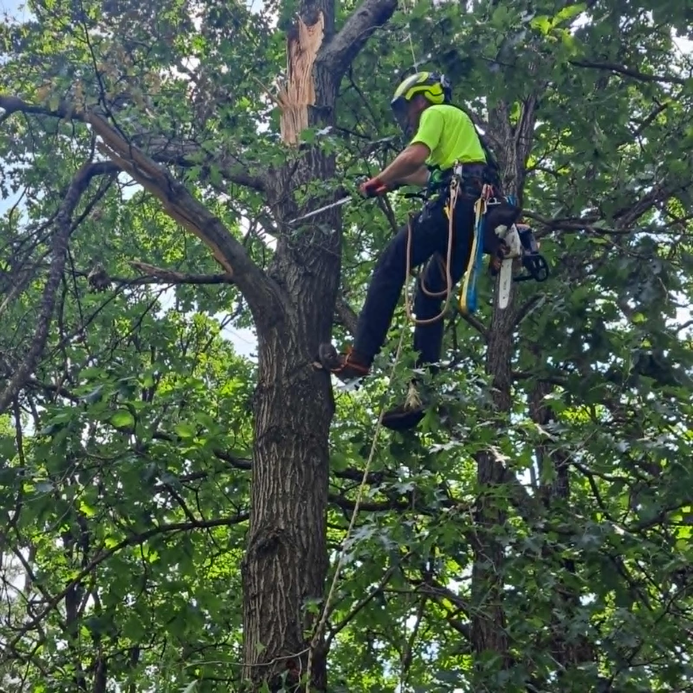
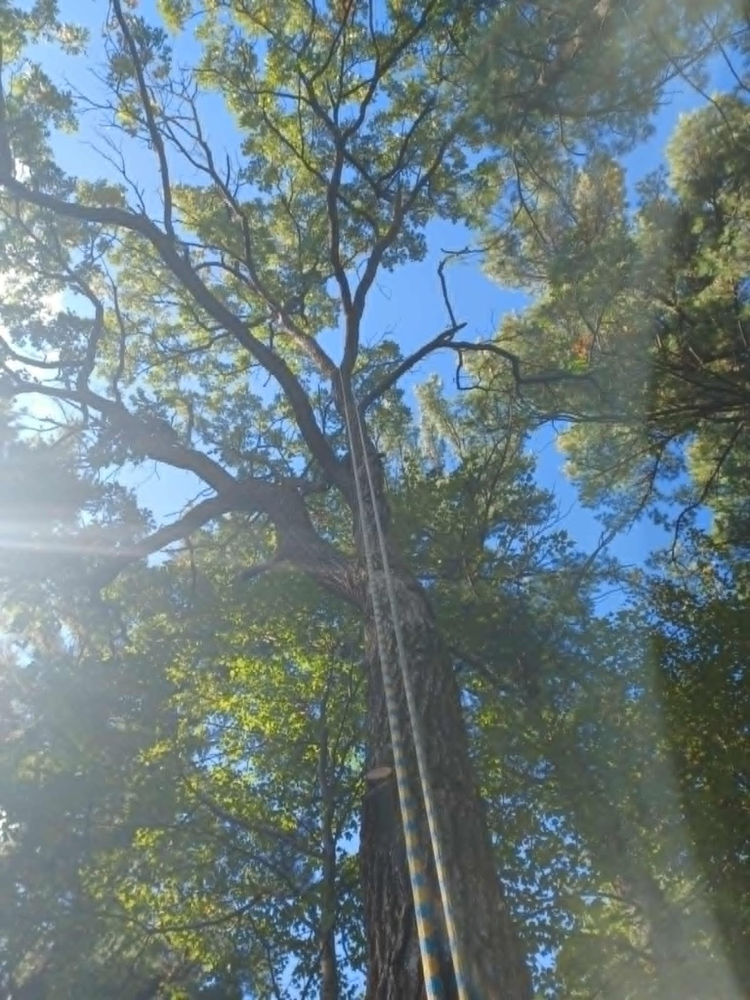
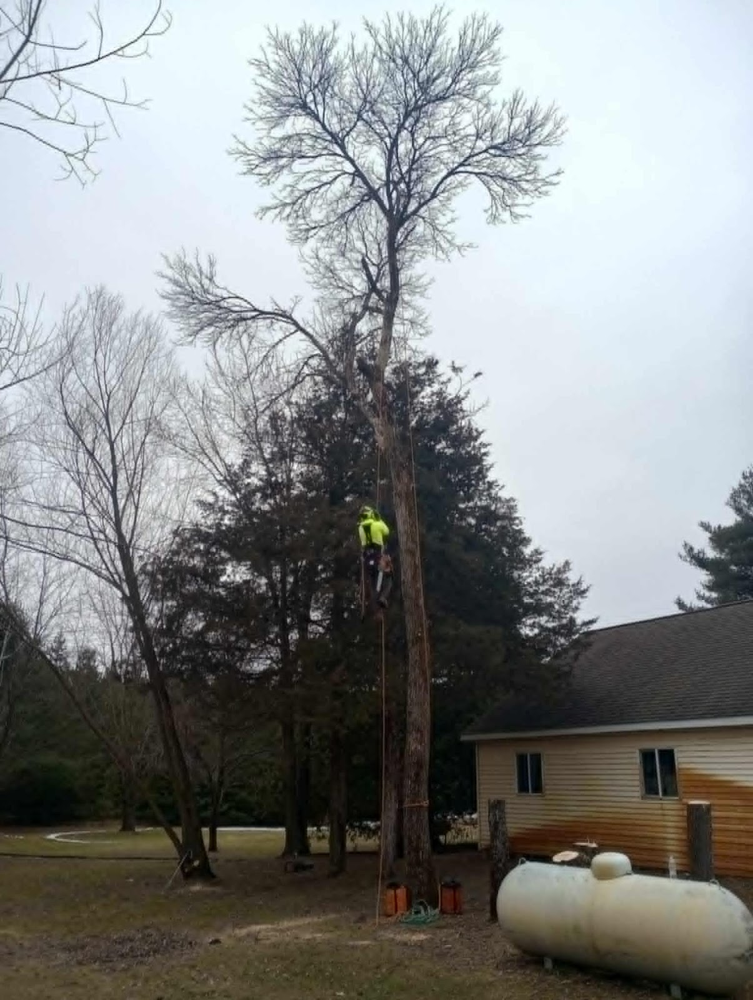
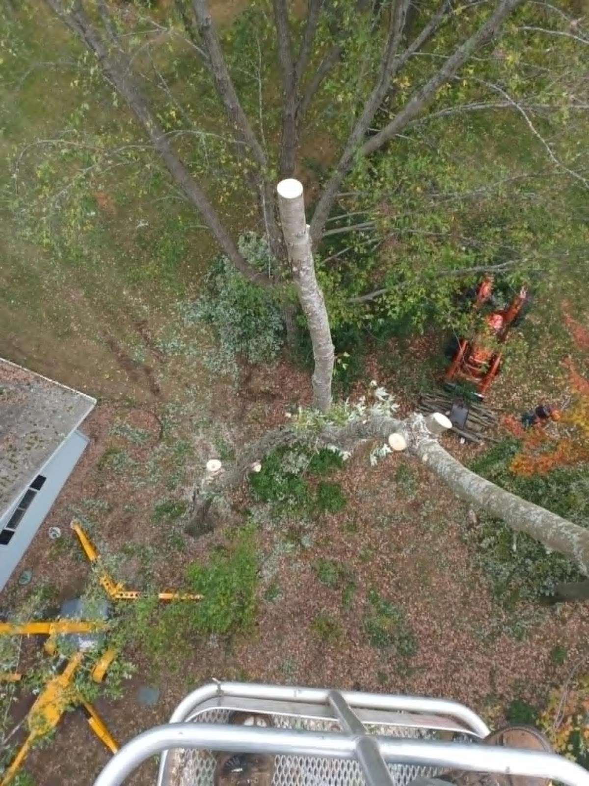
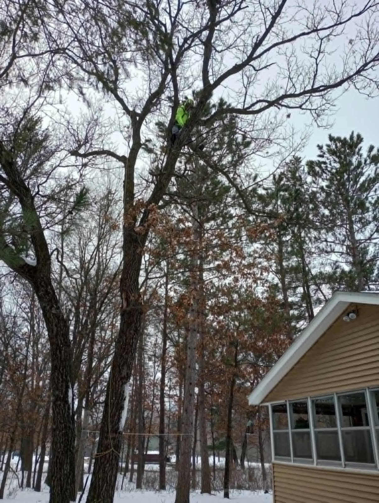
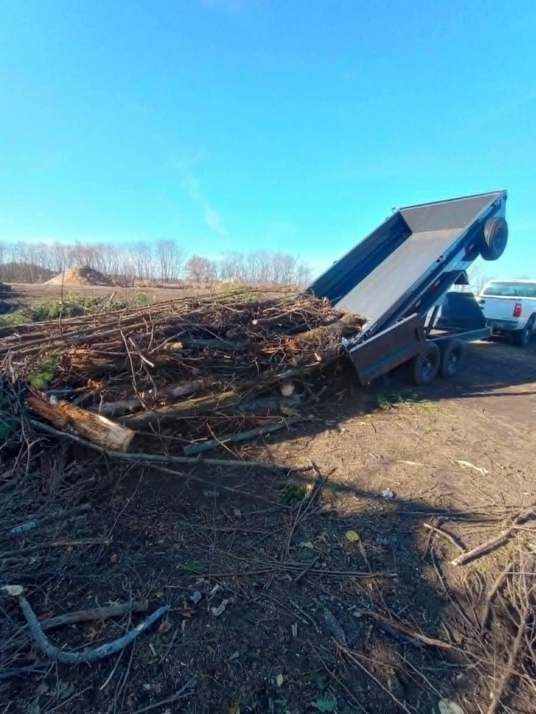

Tree Trimming & Pruning
Crown thinning, deadwood, and shaping to keep your trees healthy, balanced, and clear of the house and lines.

Tree trimming, removals, and stump grinding for homes around Stevens Point & Wisconsin Rapids. Honest estimates, clear communication, and a thorough cleanup every time.
Why neighbors call us back
Tom's Tree Care is locally owned and operated, taking on tree work around Stevens Point and Wisconsin Rapids. We keep it simple: an honest estimate, the job done the way we agreed, and a clean yard when we leave. Reach out and Tom gets back to you himself.
Honest estimates, up front
You hear a clear price and a clear plan — and we deliver exactly what we agreed on.
Easy to reach, easy to work with
Communication that's pleasant and professional, with time taken to answer your questions about your trees.
A genuinely clean job site
Brush and debris hauled away — reviewers single out the cleanup as a reason they recommend us.

5.0 / 5
from 36 Google reviews across Stevens Point & Wisconsin Rapids
What we do
From routine pruning to taking down a big tree tight against the house, here's the work we take on.
Crown thinning, deadwood, and shaping to keep your trees healthy, balanced, and clear of the house and lines.
Safe takedowns — including trees standing tight against a house or garage — handled carefully from the top down.
Grind the leftover stump down and clean up after, so you're left with a yard you can mow over.
Brush, limbs, and logs loaded out and hauled away — the thorough cleanup our reviews keep mentioning.
Tell us what you're looking at and we'll come take a look, talk it through, and give you an honest number.
Give Tom a call and we'll figure out the right approach for your tree together.
Our work
Every photo here is our own crew on our own jobs — climbing, sectioning, and hauling out the debris.




Honest estimates, careful work, and a yard cleaned up the way you'd do it yourself.
Tom's Tree Care LLC · Stevens Point & Wisconsin Rapids, WI
In their words
"Tom was great to work with — very communicative, honest with his estimate, and delivered exactly what we agreed on when trimming our tree. He also did an excellent job cleaning up afterward and took the time to answer all my questions about tree care."
"Tom was great to work with! He was easy to get ahold of and communication was pleasant and professional. He also did exactly what I needed done with the tree I needed to come down."
Get in touch
Give us a call to set up a free, no-pressure estimate. We serve homes across Stevens Point and Wisconsin Rapids.
Call for a free estimate